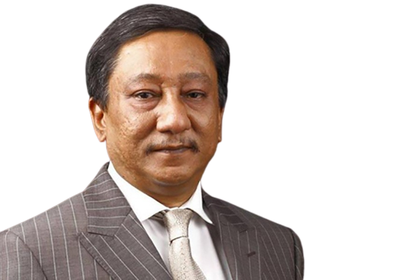

ABOUT BANGLADESH CRICKET!
The Bangladesh men's national cricket team (Bengali: বাংলাদেশ জাতীয় ক্রিকেট দল), popularly known as The Tigers,[12] is administered by the Bangladesh Cricket Board (BCB). It is a Full Member of the International Cricket Council (ICC) with Test, One-Day International (ODI) and T20 International (T20I) status. It played its first Test match in November 2000 against India with a 9 wicket loss in Dhaka, becoming the tenth Test-playing nation.[13][14][15][16][17]
Bangladesh became an associate member of the ICC in 1977,[18] and competed in six ICC Trophies, the leading ODI competition for non-Test playing nations.
Bangladesh's first official foray into international cricket came in the 1979 ICC Trophy in England. On 31 March 1986, Bangladesh played its first ODI match, against Pakistan in the Asia Cup. For a long time, football was the most popular sport in Bangladesh, but cricket gradually became very popular – particularly in urban areas – and by the late 1990s had surpassed football.
Bangladesh made its full debut in international cricket in the 1986 Asia Cup.
In 1997, Bangladesh won the ICC Trophy in Malaysia and thus qualified for its first Cricket World Cup to participate in England in 1999. There, it defeated Pakistan – causing much upset – and also Scotland. On 26 June 2000, Bangladesh was granted full ICC membership.[19][20][21][22][23]

HE IS BCB PRESIDENT.
Bangladesh holds the record for most consecutive losses in Tests (21, between 2000 and 2002) and ODIs (23, between 2001 and 2004). After gaining Full Member status with the ICC, Bangladesh had to wait until 2004 for its first ODI win since the 1999 World Cup. The team on the losing side on that occasion was Zimbabwe, who also participated in Bangladesh's maiden Test victory in 2005; by securing a draw in the second match, Bangladesh won their first Test series. In 2009 Bangladesh toured the West Indies for two Tests and by winning both secured their first overseas Test series victory. They then came back to the Caribbean in 2014 for another 2 match test series and the West Indies claimed revenge on Bangladesh for that 2-test series loss that they gave them 5 years earlier by defeating in both test matches.
As of 5 January 2022, Bangladesh has played 128 Tests, winning 16. Its first victory was against Zimbabwe, and the next two came against the West Indies. Results have improved predominantly at home with draws earned against Pakistan, India and South Africa and wins against England, Sri Lanka, New Zealand and Australia.[24] They played their 100th Test when they toured Sri Lanka in March 2017 which they won by 4 wickets.[25][26][27][28][29][30]
As of 28 February 2022, the team has been more successful in ODIs, having won 140 of its 394 matches.[31] They played their 100th ODI[32][33] when India toured Bangladesh in December 2004 which they won, 200th ODI when Bangladesh toured West Indies in 2009 which they won and 300th ODI[34] in the quarter-final of the 2015 ICC Cricket World Cup against India. They got their 100th ODI win when Afghanistan toured Bangladesh in October 2016.[35][36]
Bangladesh have also played 125 T20Is, winning 44.[37] They played their 100th T20I against Zimbabwe in July 2021 which they won.[38][39] Results have improved with wins against Pakistan, India, Sri Lanka, Australia, New Zealand and West Indies.[40]
Bangladesh's major achievements include reaching the quarter-finals in 2015 ICC Cricket World Cup, being runners up in three Asia Cup (in 2012, 2016 and 2018) and in 2018 Nidahas Trophy and winning 2019 Ireland Tri-Nation Series which was Bangladesh's first ever multi-team ODI tournament final win.
As of 6 April 2022, Bangladesh is ranked 9th in Tests,National teams
Main articles: Bangladesh national cricket team and Bangladesh national women's cricket team
The Bangladesh national cricket team, also known as "The Tigers", is the national cricket team of Bangladesh.
Bangladesh is a full member of the International Cricket Council with Test, One Day International and T20I status. It played its first Test match in 2000 (against India at Dhaka), becoming the tenth Test cricket playing nation.
They also take part in officially sanctioned ACC tournaments including the Asia Cup, Asian Test Championship, ACC Trophy and the ACC Under-19 Cup.
Bangladesh also has an active women's team which gained One Day International status after finishing 5th at the 2011 Women's Cricket World Cup Qualifier. The women's team also claimed the silver medal at the 2010 Asian Games cricket tournament and won the 2018 Women's Asia Cup.
History
The history of cricket in Bangladesh predates the foundation of the Bangladeshi state in 1971 by nearly two centuries. Cricket was introduced to Bengal by the British in the eighteenth century but its growth in East Bengal was slow. Following Partition and the creation of East Pakistan, both first-class and Test cricket were played there during the 1950s and 1960s. Although cricket continued to be popular after independence, especially in Dhaka, the country lost first-class status and had to establish itself in international competition as an Associate Member of the International Cricket Council (ICC). Bangladeshi international cricket began in 1976/77 when the Marylebone Cricket Club (MCC) came to play against the Bangladesh national side. MCC played their first match against a regional team in Rajshahi with the match ending in a draw. The first unofficial Test against the MCC was played at Dhaka on 4 January 1977.
The Bangladesh national team then went on to play against teams like Sri Lanka, Deccan Blues and MCC in the later years.
After winning the 1997 ICC Trophy and making a good showing at the 1999 Cricket World Cup, Bangladesh created its National Cricket League (NCL) in 1999–2000 to prepare the way for full membership of the ICC. This was granted in 2000 and the Bangladesh Cricket Board (BCB) was formally established. In November 2000, the Bangladesh national team played its inaugural Test match against India at the Bangabandhu National Stadium in Dhaka; India won by 9 wickets.
The 2000–01 season saw the beginning of first-class domestic competition in Bangladesh, although the country had already staged first-class matches against touring teams in the previous year. The Green Delta National Cricket League was constituted as the first-class championship and the Ispahani Mirzapore Tea One-Day League as the premier limited overs competition. In 2000–01, both titles were won by Biman Bangladesh Airlines.
The National Cricket League had in fact been inaugurated in the 1999–2000 season but was not then first-class. In 2000–01, eight teams played 12 matches each in two groups. Group A consisted of Biman Bangladesh Airlines, Chittagong Division, Rajshahi Division and Dhaka Division. Group B had Dhaka Metropolis, Khulna Division, Barisal Division and Sylhet Division. Four teams qualified for a final stage in which they each played a further 8 games.[citation needed]
In 2001–02, Ispahani Mirzapore Tea became the sponsor of the National Cricket League in addition to the One-Day League.
Bengal
Cricket was first introduced into Bengal by the British East India Company in the eighteenth century and the first cricket matches recorded were in Calcutta in 1792, but matches were possibly played more than a decade earlier and the sport quickly achieved popularity in western Bengal and neighbouring Bihar. In eastern Bengal, the area which is now Bangladesh, cricket developed very slowly as the area failed to attract large numbers of European settlers until the second half of the nineteenth century. The problems were the region's predominantly rural character and its lack of infrastructure given that it had numerous rivers and travel was extremely difficult. The confluence of the Ganges and the Brahmaputra is in central Bangladesh and the coastal area consists of the Sundarbans mangrove forest and the Ganges Delta. The British saw it as a remote region with few economic incentives. Improvement was gradual and it was not until the 1860s and 1870s that the British built the new roads that facilitated communication. Work was done to improve water supplies, with a consequent boost to public health, and Europeans began to settle in Dhaka with cricket soon becoming one of their favourite recreational activities, as had happened elsewhere in India. In 1876, a European XI met and defeated a Native XVIII in Dhaka.[1]
A team representative of Bengal played against G. F. Vernon's XI, the first English team to visit the Indian sub-continent, in 1889–90.[2] In January 1923, Bengal took part in the Nagpur Provincial Tournament with Bombay and a Central Provinces XI.[3] In 1934, the Board of Control for Cricket in India organised the Ranji Trophy but Bengal did not take part in 1934–35. Bengal achieved first-class status in December 1935 when they played the Australian tourists and were defeated by 9 wickets. In January 1936, Bengal joined the Ranji Trophy, playing in the East Zone, and reached the semi-final where they lost to Madras. In 1937, Bengal were runners-up and, in 1939, winners of the Ranji Trophy. Throughout this period, Bengal was essentially a West Bengal team. They were based in Calcutta and played all their matches at Eden Gardens. The earliest match of note in Dhaka was in February 1941 when a Bengal Governor's XI played the Bengal Gymkhana at the Bangabandhu National Stadium, then called the Dacca Stadium.[4]
With the Partition of British India in 1947, Bengal itself was partitioned with West Bengal remaining an Indian province and East Bengal becoming the eastern wing of Pakistan. In 1955, the western wing became West Pakistan and East Bengal became the new province of East Pakistan. The two wings were separated by some 1,600 km (1,000 miles) of Indian territory and, despite their common religion of Islam, the ethnic and linguistic gulf between the two, compounded by an apathetic government based in the west, eventually resulted in the independence of Bangladesh. While Pakistani cricket was strong in the west, there was no first-class cricket in East Bengal until the 1954–55 season.[citation needed]
East Pakistan
See also: History of cricket in Pakistan from 1947 to 1970
Between the 1954–55 and 1970–71 seasons, thirteen East Pakistan first-class cricket teams played in Pakistan's domestic cricket competitions, the Quaid-i-Azam Trophy and the Ayub Trophy. Many played in only a single season or two. The most prolific were East Pakistan (nine seasons), Dhaka University, East Pakistan Greens and East Pakistan Whites (three each). Chittagong is a good example of the sporadic way in which teams from East Pakistan were involved in the national competitions as they were scheduled to play three matches between 1959–60 and 1965–66 and all were abandoned without play starting. The main East Pakistan team played first-class matches against the touring Indians in 1954–55 and Marylebone Cricket Club in 1955–56.[citation needed]
East Pakistan staged Test cricket from January 1955 when a match between Pakistan and India was allocated to the Bangabandhu National Stadium in Dhaka. The stadium was used for numerous important matches including Tests through the 1960s. The M. A. Aziz Stadium in Chittagong also dates back to 1954 as a first-class venue but it was not used for Tests until Bangladesh played there in 2001.[citation needed]
Relations between East and West Pakistan had been tense since Partition. East Pakistan was plunged into turmoil on 12 November 1970 when Cylone Bhola struck Bengal with enormous loss of life and devastating impact on the community and economy. The Pakistani government, based in West Pakistan, was roundly condemned for procrastination in its response to the crisis. A few weeks later, when the country's first general election was held on 7 December, widespread outrage in the East resulted in victory for the Awami League which was a Bengali nationalist party under the leadership of Sheikh Mujibur Rahman. This led to an opening of talks between representatives of the East and West wings of Pakistan about the future of the country's constitution under a national government headed by the Awami League, and proposals for the division of power between the central government and the provinces. The talks were unsuccessful in breaking a deadlock and, on 1 March 1971, Pakistani President Yahya Khan indefinitely postponed the pending National Assembly session, precipitating massive civil disobedience in East Pakistan. Three weeks later, Bangladesh formally declared its independence and the country was plunged into its liberation war which raged through 1971 until intervention by India, in support of the Bangladeshis, on 3 December 1971. The Indo-Pakistani War of 1971 was short-lived and resulted in Pakistan's capitulation on 16 December 1971, celebrated as Victory Day in Bangladesh, which was then established as a new nation.[citation needed]
The last first-class match to be completed in East Pakistan was between a Pakistan Cricket Board XI and the touring International XI in Dhaka from 26 February to 1 March 1971.[5] It was drawn and its final day coincided with Yahya Khan's suspension of the National Assembly, the action which finally triggered the liberation war. The International XI left Dhaka next day for Lahore and played one further match there to end their tour. Two Quaid-i-Azam Trophy matches scheduled to be played in Dhaka during March were both cancelled because of the national emergency.[6]
1972 to 1977

SHE IS THE PRESIDENT OF BENDLADESH
After independence, the new state endured poverty, famine, political turmoil and military coups until the restoration of democracy in 1991 which has been followed by relative calm and economic progress. Cricket had to find its way forward amid the turmoil but it was helped by successive governments, civil and military, which treated its development with some importance. In 1972, the government created the Bangladesh Cricket Board, then called the Bangladesh Cricket Control Board, with a directive to organise cricket in the new country. In the aftermath of the war, this was no easy task. Barclays World of Cricket records that, in early 1975, the national stadium in Dhaka was "in such disrepair (some buildings being shell-torn) that the cricket square had sunk several inches after years of disuse".[7]
The problems of post-war recovery apart, cricket was popular in Dhaka and the first organised competition of note was the club-level Dhaka Metropolis Knockout Tournament staged in February and March 1973.[8] A national club championship began in 1974–75 and has been held in most seasons to 2015.[9] This gained sponsorship by the Wills tobacco company from 1983 to 1984, then by Pepsi from 1993 to 1994, but it has never been a first-class competition. It has similar status to league cricket in England or grade cricket in Australia.
The worst of the problems had been addressed by the start of the 1976–77 season. In January 1977, the inaugural Bangladesh national cricket team was selected for a match against the touring MCC at the Bangabandhu National Stadium. MCC also played against North Zone, East Zone and South Zone which was the first time that any of these teams, now in the Bangladesh Cricket League, were selected. Although the MCC team included some notable county cricket players such as Mick Norman, John Barclay, Dan Piachaud and Nigel Popplewell, their matches on the 1976–77 tour were not first-class. Even so, Bangladesh made a favourable impression on MCC and it was in 1977 that the country became an Associate Member of the International Cricket Council (ICC).
1978 to 1986
The first full international team to visit Bangladesh was Sri Lanka in January 1978. Sri Lanka was then close to ICC Full Member status (achieved in 1982) and their higher standard was underlined by a series of innings victories in the three international matches against Bangladesh. The three-day match in Dhaka starting on 13 January 1978, which Sri Lanka won by an innings and 9 runs, was Bangladesh's debut in international cricket but the very low standard of Bangladeshi cricket at the time means that it was not a first-class match.[10]
Sri Lanka also played against a BCB President's XI, South Zone and Central Zone, the first time that this team was selected. In early February, the first Indian team to visit Bangladesh was the Hyderabad Blues who played a single game in Dhaka against the national team. MCC returned in December 1978 and played six matches at various locations, five of them against the national team. None of the 1978 matches were first-class.
Bangladesh made their competitive international debut when taking part in the 1979 ICC Trophy, held in England between 22 May and 21 June, but failed to reach the semi-final stage. Captained by Raqibul Hasan, Bangladesh were in Group B (there were three qualifying groups of five teams each) against Canada, Denmark, Fiji and Malaysia. Bangladesh struggled in their opening match against Fiji but were rescued by Ashraful Haque who took 7–23 to secure a 22-run victory. In the second match, Bangladesh were well beaten by Canada. They won convincingly against Malaysia and so needed to defeat Denmark in the last match to qualify for the semi-finals. It was a close game but Denmark won by ten runs. Denmark won the group with Canada second and both of these two qualified for the semi-finals, Bangladesh being placed third. Sri Lanka then defeated Denmark and Canada in turn to win the tournament.
In the 1979–80 season, Pakistan visited Bangladesh for the first time. It was eight years after the end of the Liberation War but tensions were still evident. The visit was in January during a break in Pakistan's six-Test tour of India. In a two-day match on 2 & 3 January, the Pakistanis played a BCB XI at the M. A. Aziz Stadium in Chittagong. The BCB XI played well though each of the first three innings were ended early by sporting declarations. At tea on the second day, with the BCB XI struggling to chase a target of 211, there was a crowd riot which prematurely terminated the game as a draw.[11] Because of the riot, an international match due to start at the National Stadium two days later was cancelled.[12] It was not until January 1994 that the Pakistan national team could safely tour Bangladesh. In March 1980, an inter-divisional tournament was staged which included teams from the Chittagong, Dhaka, Khulna and Rajshahi divisions. It was the first time that divisional teams were selected and this tournament anticipated the National Cricket League which was launched twenty years later. Fortunately, the riot in 1980 did not deter other tourists and MCC returned to Bangladesh in 1980–81, followed by the Calcutta and Hyderabad clubs from India in 1981–82.
In the 1982 ICC Trophy, also held in England, Bangladesh reached the semi-finals and lost to the eventual winners, Zimbabwe. This time, there were sixteen teams divided into two groups of eight. Bangladesh were in Group B. Two of their seven matches were abandoned because of bad weather and they had two very narrow wins against Malaysia, by a single run, and Netherlands, by four runs. They had only one defeat and so finished second. The defeat was against group winners Bermuda and it was a heavy one, again exposing Bangladesh's limitations at this stage of their development. Bangladesh were bowled out for only 67 and Bermuda needed just 15.5 overs to win by seven wickets.[13] The limitations were again exposed in the semi-final when Bangladesh's batsmen could only reach 124, Zimbabwe winning easily by eight wickets.[14] Zimbabwe defeated Bermuda in the final and there was another setback for Bangladesh when they lost the third-place playoff match to Papua New Guinea by three wickets despite an innings of 115 by Yousuf Rahman.
In 1983–84, Bangladesh hosted a tournament for the first time. This was the South East Asian Tournament (limited overs) in which the national team played against Hong Kong, Singapore and a BCB under-25 XI. Bangladesh defeated Hong Kong by 3 wickets in the final to claim the country's first international trophy.[15]
The first New Zealand team to visit Bangladesh arrived in 1984–85. This was the New Zealand Ambassadors who played two limited overs matches in January against Dhaka University and a BCB Under-25 XI. In March, Sri Lanka returned to play a single three-day match against Bangladesh, captained by Gazi Ashraf, in the National Stadium. Bangladesh did well to secure a draw after scoring 139 and 152 for 6 against Sri Lanka's 429 for 9 declared.[16]
In the 1985–86 season, neighbouring Bengal toured Bangladesh and played four matches against university and BCB teams in February and March. On the basis of their triumph in the South East Asian Tournament two years earlier, Bangladesh were invited to take part in the 1986 Asia Cup, the first edition of this tournament, in Sri Lanka after India withdrew. On 31 March, Bangladesh played their first-ever List A-classified Limited Overs International against Pakistan at the Tyronne Fernando Stadium in Moratuwa. Captained by Gazi Ashraf, Bangladesh were dismissed for 94 and Pakistan won easily by seven wickets. Three days later, Bangladesh lost to Sri Lanka by the same margin.
Writing in 1986, Robin Marlar expressed positive views about Bangladeshi cricket including his opinion that the country would, with more encouragement and experience, one day win the ICC Trophy. He also mentioned the large crowds attending matches and the potential for thousands more to play the game.[17] In June and July, Bangladesh competed in the 1986 ICC Trophy, again held in England. As in 1982, there were two qualifying groups and Bangladesh were placed sixth in Group A after a disappointing campaign.
1987 to 1996
Bangladesh hosted the 1988 Asia Cup, competing against India, Pakistan and Sri Lanka in the first List A classified matches to be played in the country. Bangladesh were the rank outsiders and, as expected, were easily beaten by each of their three opponents. Gazi Ashraf again captained the team. Five of the tournament's seven matches, including the final, were played at the Bangabandhu National Stadium and the other two, both involving Bangladesh themselves, at the M. A. Aziz Stadium in Chittagong. The tournament was won by India who defeated Sri Lanka by six wickets in the final.[18]
There were visits by the Hyderabad Blues and Denmark in January and February 1990 to play limited overs games against the BCB XI and club sides only and none of the matches were List A classified. The 1990 ICC Trophy in June was held in the Netherlands and Bangladesh performed with credit, qualifying via two group phases for the semi-final where they were drawn against Zimbabwe and lost by 84 runs. Zimbabwe, who won the tournament, were elected to ICC Full Member status soon afterwards. Bangladesh played in the 1990–91 Asia Cup in India but were well beaten in their two matches by Sri Lanka and the host nation.
In December 1992, Bangladesh hosted a SAARC Quadrangular tournament in which their national team competed against the A-teams of India, Pakistan and Sri Lanka, all the matches being List A classified and all to be played in Dhaka at the National Stadium. Bangladesh defeated Sri Lanka A by seven wickets in the opening game but then lost by five wickets to Pakistan A. Their third match against India A was interrupted in the ninth over by a crowd riot and abandoned. It was rescheduled three days later but with the situation still volatile, it was cancelled along with the final which would have been India A v Pakistan A.[19]
The situation was calmer the following season (1993–94) when there were short visits by Zimbabwe (November) and Pakistan (January) to play two limited overs matches each against the national team. Being friendlies, these games are not List A-classified. Zimbabwe won their matches by margins of 9 and 13 runs. Pakistan won their two games by 62 runs and 7 wickets. Although the national team were having limited success against opponents with greater experience, domestic cricket in Bangladesh was making progress and expanding. In 1994, the ICC estimated that there were 93,000 people playing cricket in Bangladesh and, as a result, playing standards were rising.[20]
Bangladesh competed in the 1994 ICC Trophy in Kenya and reached the quarter final stage and finished third in their group behind Kenya and the Netherlands. In December 1994, Bangladesh hosted a second SAARC Quadrangular against the A-teams of India, Pakistan and Sri Lanka, all the matches being List A classified and all to be played in Dhaka at the National Stadium. The problems of 1992 were not repeated and Bangladesh reached the final where they lost to India A by 52 runs. Kenya, one of Bangladesh's main opponents in Associate Member cricket, visited in January 1995 to play five one-day matches. These were not List A classified and Bangladesh won all three of the international fixtures. England's A team visited Bangladesh in February 1995 and played three double innings matches, not first-class, all against the national team. England A won the first two and the third, in which Aminul Islam scored a century, was drawn. Bangladesh were in the 1995 Asia Cup in Sharjah against India, Pakistan and Sri Lanka but lost all three of their first round matches. MCC returned in February 1996 to play a mixture of one-day and three-day matches.
1997 to 2000
The SAARC Quadrangular returned to Bangladesh in February 1997, Pakistan A defeating India A in the final. Bangladesh fared badly and were well beaten in all of their three matches. Disappointing as that was, only two months later Bangladesh had their first international success when they won the 1997 ICC Trophy in Kuala Lumpur.
Bangladesh won all five of their matches in the tournament's Group B to reach the quarter-finals, which were two more round-robin groups of four. Bangladesh qualified for the semi-finals defeating Netherlands and Hong Kong while the other game against Ireland was abandoned because of bad weather. In the semi-final, Bangladesh defeated Scotland by 72 runs. They were now playing in the final itself against Kenya and winning by two wickets, scoring the winning run from the last ball of the match.
The national team's debut in official first-class cricket was 17–19 November 1997 at Seddon Park, Hamilton, New Zealand, against a Northern Conference team. Bangladesh were guesting in the 1997–98 Shell Conference. They lost this match by an innings and 151 runs and were similarly outclassed in their other matches in the tournament.[21] In January 1998, Bangladesh hosted the List A-classified Coca-Cola Silver Jubilee Independence Cup involving India and Pakistan. They lost both their matches and India defeated Pakistan in the final.
In 1998–99, Bangladesh hosted the 1998 ICC KnockOut Trophy (known as the Wills International Cup) during October and November, although it being for Test nations only they could not play themselves but providing neutral venue. South Africa won the tournament. During November, the West Indies A team visited and having played three List A matches against Bangladesh, starting on 12 November the two teams played the first-ever first-class match in Bangladesh (i.e., since independence). West Indies A won by 8 wickets.[22] The final of the 1998–99 Asian Test Championship was played at Dhaka in March 1999, Pakistan winning by an innings and 175 runs against Sri Lanka. Later that month, Bangladesh hosted Kenya and Zimbabwe for the List A Meril International Tournament, won convincingly by Zimbabwe.
The Bangladesh team played in the Cricket World Cup for the first time, having qualified by winning the 1997 ICC Trophy, for the 1999 tournament in Great Britain. They did not get past the group stage but had a memorable victory by 62 runs over Pakistan. Their progress had received recognition and, on 26 June 2000, Bangladesh became a Full Member of the ICC, which enabled them to play Test cricket.[23] The board officially changed its name to Bangladesh Cricket Board (BCB) and its president Saber Chowdhury described his country's elevation to Test status as "the third most historic event in our national life".[23] In May/June 2000, Bangladesh had hosted the 2000 Asia Cup, won by Pakistan. In November of that year, Bangladesh played their first-ever Test match against India at the National Stadium, India winning by 9 wickets.
2001 to 2010
The country's main domestic competition, the National Cricket League (NCL), began in 1999–2000 with teams from each of Bangladesh's (then six) administrative divisions: Barisal, Chittagong, Dhaka, Khulna, Rajshahi and Sylhet.
In 2000–01, its second season, the NCL became a first-class competition, sponsored by the Green Delta insurance company, and won by Biman Bangladesh Airlines. The 2000–01 NCL involved eight teams playing twelve matches each in two groups. Four teams qualified for a final stage in which they each played a further eight games. Group A consisted of Biman Bangladesh Airlines, Chittagong, Rajshahi and Dhaka Division. Group B had Dhaka Metropolis, Khulna, Barisal and Sylhet.
In 2001–02, Ispahani Mirzapore Tea became the sponsor of the NCL in addition to the new One-Day League, introduced as the premier limited overs competition. The NCL was reduced to six teams in 2001–02 with Dhaka Metropolis and the champions, Biman Bangladesh Airlines, both dropping out. Following creation of Rangpur Division in January 2010 as the country's seventh administrative region, the NCL in 2011–12 was again expanded to eight teams with the introduction of the Rangpur team and the return of Dhaka Metropolis, although the latter had no settled home venue.
Between 2001 and 2004, Bangladesh suffered from heavy defeats in ODI's. They also suffered from 5 heavy defeats and 1 no results in 2003 Cricket World Cup.
2011 to present
The One-Day League was terminated after the 2010–11 season. The main List A limited overs competition since then is the Dhaka Premier Division, which began in 2013–14.
Bangladesh co-hosted the 2011 Cricket World Cup with India and Sri Lanka. The country was the sole host of the 2014 ICC World Twenty20, the final of which was played at the Sher-e-Bangla National Cricket Stadium. In addition, Bangladesh has hosted, in succession, the three Asia Cup tournaments in 2012, 2014 and 2016.
Bangladesh also continued to do well in test cricket. They have beaten England and Sri Lanka in 2016-17 session. The win against Sri Lanka was the 100th test match and 9th winning test match for Bangladesh. A few months later they have beaten Australian test team in 1 match and drawn the series.
The Bangladesh Cricket League (BCL), another first-class competition, began in 2012–13. It is played by four teams selected on a zonal basis (North Zone, South Zone, East Zone and Central Zone) to give experience to leading players of a higher standard than the NCL and so prepare them for Test cricket. The winners of the four championships to 2016 have been Central Zone and South Zone winning two apiece. In April 2015, the BCL staged a One-Day League, which was won by East Zone.
The Bangladesh Premier League (BPL) is the country's main Twenty20 competition. It was founded in January 2012 and despite problems including match-fixing, it has been a commercial success, said by its promoters to be second only to the Indian Premier League (IPL) in terms of global revenue.
Competitions
Main articles: National Cricket League (Bangladesh), One-Day Cricket League of Bangladesh, Dhaka Premier Division, Bangladesh NCL (National Cricket League) Twenty20, Bangladesh Premier League, Bangladesh Cricket League, BCB President's Cup, and 2020-21 Bangabandhu T20 Cup
Soon after the establishment of BCB, a cricket league commenced in Dhaka and Chittagong. A national-level cricket tournament begun in the country in 1974–75. During this time the cricket league started at the district (regional) level. Other tournaments that were organized were aimed at school, college, youth and university level.
The National Cricket League of Bangladesh is the domestic first class cricket competition in Bangladesh, first held in 1999–00.
The One-Day Cricket League of Bangladesh was the principal domestic limited overs cricket competition in Bangladesh, first held in 2000–01. It has since been superseded by the Dhaka Premier Division competition, which gained List A status in 2013.
In 2010, the NCL T20 was launched which was a Twenty20 tournament. This tournament was dropped after its first and only season and was replaced by the Bangladesh Premier League in 2012. The Bangladesh Premier League is a Twenty20 league with six franchises based on the concept of the Indian Premier League and has attracted many international players.
In 2020, BCB launched a 50 over tournament named BCB President's Cup with 3 teams and a T20 tournament named Bangabandhu T20 Cup. 7th in ODIs and 9th in T20Is by the ICC.[41]